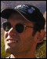
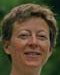
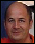
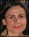

Conference Home

Program Committee
University of Twente, The Netherlands |
Illinois Institute of Technology, USA |
|||
|  | Universidade Nova de Lisboa, Portugal |
 |
Technische Universität Dresden, Germany |
|
Chinese University of Hong Kong, China |
Universidade Federal de Pernambuco, Brazil |
|||
 |
Drexel University, USA |
Universidade Federal de Pernambuco, Brazil |
||
Michigan State University, USA |
 |
University of Victoria, Canada |
||
University of Waterloo, Canada |
Colorado State University, USA |
|||
University of Málaga, Spain |
Pontifícia Universidade Católica do Rio de Janeiro, Brazil |
|||
|  | Geri Georg Colorado State University, USA |
 | Juan Hernández University of Extremadura, Spain |
|
Univ. Rennes 1 and INRIA, France |
Vrije Universtiteit Brussel, Belgium |
|||
The Technion-Israel Institute of Technology, Israel |
Pontifícia Universidade Católica do Rio de Janeiro, Brazil |
|||
University of Tokyo, Japan |
 | Technische Universität Darmstadt, Germany |
||
The Open University, UK |
 |
Iowa State University, USA |
||
 |
Lancaster University, UK |
Universität Duisburg-Essen, Germany |
||
University of Calgary, Canada |
Lancaster University, UK |